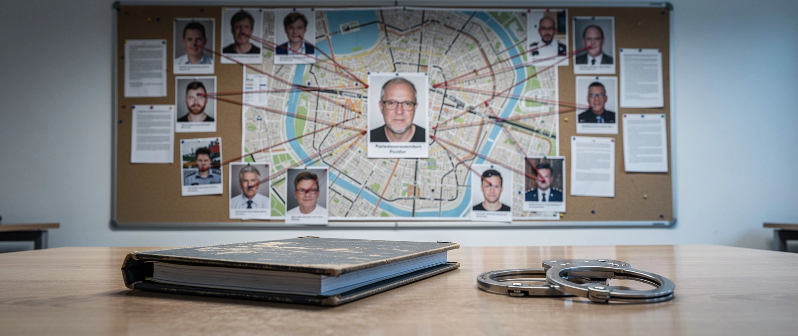

Namen bekannt, Zugriff vertagt

Der größte Stromausfall der Nachkriegszeit war kein Unfall. Die Verdächtigen sind bekannt. Festgenommen ist trotzdem niemand.
Zwei Anschläge stehen im Zentrum: im September 2025 auf den Technologiepark Berlin-Adlershof, im Januar 2026 auf das Netz im Südwesten der Stadt. Rund 100.000 Menschen saßen im Januar im Dunkeln, der größte Blackout der Nachkriegszeit. Der Regierende Bürgermeister Kai Wegner (CDU) verlor darüber am Ende sein Amt. Zu solchen Angriffen bekennt sich seit 2011 die linksextreme Vulkangruppen-Szene; den Behörden zufolge gehen mindestens dreizehn Anschläge auf ihr Konto.
Ende März durchsuchten 500 Polizisten fünfzehn Objekte in Berlin, Hamburg, Düsseldorf und Brandenburg. Vier Beschuldigte zwischen 28 und 36 Jahren, szenebekannte Linksextreme, stehen im Fokus. Bei der Razzia fanden die Beamten Geräte zum Aufspüren von Kameras und Wanzen, laut einem Insider der Welt am Sonntag „Material, auf das Geheimdienste stolz wären“. Es gilt die Unschuldsvermutung.
Zugreifen, also festnehmen, wollen die Ermittler erst, wenn der Zeitpunkt aus ihrer Sicht stimmt. Zugleich haben die Beschuldigten Rechtsmittel gegen die Beschlagnahme ihrer Datenträger eingelegt. Die Generalstaatsanwaltschaft Berlin sagt, die Auswertung dürfe weitergehen; aus Ermittlerkreisen heißt es, das Bundeskriminalamt komme derzeit nicht an die Daten. Aufgeklärt ist der Widerspruch nicht.
Zur Dimension gehört, wer ermittelt: Der Generalbundesanwalt zog den Fall schon im Januar an sich, Vorwurf ist die Mitgliedschaft in einer terroristischen Vereinigung. Das ist die schärfste Kategorie, die das deutsche Strafrecht kennt. Der größte Blackout der Nachkriegszeit, ein Terrorverfahren, vier namentlich Verdächtige, und niemand in Untersuchungshaft.
Die Szene macht unterdessen weiter. Im Juni brannte ein Umspannwerk in Reutlingen, es folgten Regensburg und in der vergangenen Woche die Bahnstrecke Köln-Düsseldorf. Fünfzehn Jahre, dreizehn Anschläge, der größte Blackout des Landes. Bekannt ist das Netzwerk. Gefasst ist es nicht.
Mehr dazu: Der Tennistermin und die Terrorzelle.